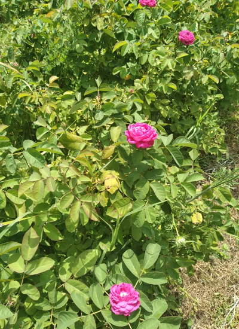

3 Oj, Slavuj pile
Gentil rossignol
(Trinaesta Rukovet - 13ème guirlande :03:52 - 05:32 )

|
|
 Version Mokranjac |
 Peva Jasna KoÄijaÅ¡eviÄ (roÄena 1951 g.) |
 Peva: Merima Njegomir (1953 - 2021) |
 Nada Mamula (1927 - 2001) peva "Bulbul" |
NOTES
|
[1] СлавÑÑ Ð¸ ÐÑлбÑл Ðво Ñе пеÑма коÑÑ ÑеминиÑÑиÑки покÑеÑи ÑеÑко да би ÑÑебало да Ñене. Ðлада жена Ñвог мÑжа назива âгоÑподаÑaâ! Тема ÑлавÑÑа коÑи заÑÑбÑенима ÑлÑжи као бÑдилник, поздÑавÑаÑÑÑи зоÑÑ, Ñе велики клаÑик (âпеÑме зоÑеâ...). Ðалази Ñе Ñ ÐоÑни, Ñ Ð»Ð¾ÐºÐ°Ð»Ð½Ð¾Ð¼ ÑпеÑиÑалиÑеÑÑ, "Ñевдалинки" (ÑенÑименÑална ÑоманÑа). Ðли Ñ Ð¼ÑÑлиманÑким земÑама ÑлавÑÑ Ñзима ÑÑÑÑко име âбÑлбÑлâ, вÑÑ ÑÑжа поÑÑаÑе âÑÑл баÑÑаâ, а ÑÑбавник поÑÑаÑе âаÑикâ. Сада Ñе ÑмаÑÑа да "ÑÑпÑкоһÑваÑÑки" Ñезик виÑе не поÑÑоÑи и говоÑимо о "боÑанÑком ÑезикÑ". ÐадаÑмо Ñе да Ñе ове лепе ÑиÑеÑи Ñвек биÑи пÑиxваÑене изван ÐоÑне. ÐаÑвеÑа боÑанÑка певаÑиÑа Ðада ÐамÑла, ÑоÑена ÐÑкиÑевиÑ, била Ñе СÑпкиÑа... [2] ÐаÑодна мÑзика и СÑаÑогÑадÑка мÑзика ÐнÑеÑпÑеÑаÑиÑа коÑÑ Ð´Ð°ÑÑ Ð´Ð²Ðµ певаÑиÑе ÐаÑна ÐоÑиÑаÑÐµÐ²Ð¸Ñ Ð¸ ÐеÑима ÐÐµÐ³Ð¾Ð¼Ð¸Ñ Ð¸Ð· "СлавÑÑ-пиле" веома Ñе ÑазликÑÑе од пеÑмe коÑy Ñе компоновао ÐокÑаÑÐ°Ñ Ð¸ ÑеÑко Ñе пÑепознаÑи мелодиÑÑÐºÑ Ð»Ð¸Ð½Ð¸ÑÑ. ÐеÑ, ако Ñе не ваÑам, веÑзиÑа певаÑа поÑиÑе од âÑÑаÑогÑадÑке мÑзикеâ, мÑзиÑког ÑÑила (коÑи Ñе био?) ÑеÑеног Ñ Ð¡ÑбиÑи и ÐакедониÑи поÑеÑком 20. века. ÐаÑÑала Ñе из ÑпоÑа ÑÑадиÑионалне(наÑоднe мÑзикe и ÑÑиÑаÑа забавнe западне мÑзике Ñог вÑемена (ÑиÑмови, инÑÑÑÑменÑи...). Ðва мÑзика поÑиÑе из гÑадова Ñ ÐºÐ¾Ñима Ñе Ñ 19. Ð²ÐµÐºÑ Ñазвила аÑÑоxÑона бÑÑжоазиÑа ÑиÑи ÑÑ Ñе наÑин живоÑа и кÑлÑÑÑни һоÑÐ¸Ð·Ð¾Ð½Ñ Ñ Ð²ÐµÐ»Ð¸ÐºÐ¾Ñ Ð¼ÐµÑи Ñазликовали од ониһ Ñ ÑÑÑалним облаÑÑима Ñог вÑемена. ÐокÑаÑÑева клаÑиÑна мÑзика, ÑиÑи ÑÑ ÐµÐ¼Ð¸Ð½ÐµÐ½Ñни ÑпеÑиÑиÑни квалиÑеÑи неоÑпоÑни, ÑакоÑе Ñе веома далеко од наÑоднe мÑзике. ÐокÑÑаваÑÑ Ñе ÑеконÑÑÑÑиÑаÑи мÑзиÑке ÑоÑмÑле ÑпеÑиÑиÑне за ÑÑко огÑаниÑенa меÑÑа: ова иÑкÑÑÑва Ñе називаÑÑ âизвоÑна мÑзикаâ. |
[1] Slavuj et Bulbul Voilà une chanson que les mouvements féministes ne doivent guère apprécier. La jeune femme appelle son mari "gospodar", "son maître"! Le thème du rossignol qui sert de réveil aux amants en saluant l'aurore est un grand classique ("chants d'aube"...). On le retrouve en Bosnie, dans la spécialité locale, la "sevdalinka" (romance sentimentale). Mais en pays musulman, le rossignol (slavuj) prend le nom turc de "boulboul", une roseraie (vrt ruža) devient une "džul baÅ¡Äa" et un amoureux (ljubavnik) un "aÅ¡ik". Désormais la langue "serbo-croate" est réputée ne plus exister et l'on parle de "langue bosniaque". Espérons que ces jolis mots auront toujours droit de cité en dehors de la Bosnie. La plus grande interprête de chants de Bosnie, Nada Mamula, née VukiÄeviÄ, était Serbe... [2] Narodna muzika et Starogradska muzika L'interprétation que donnent les deux chanteuses Jasna KoÄijaÅ¡eviÄ et Merima Njegomir de "Slavuj- pile" est très différente du choeur composé par Mokranjac et il est difficile de reconnaître la ligne mélodique. C'est que, sauf erreur, la version des chanteuses relève de la "starogradska muzika" (musique de vieille-ville), un style musical (qui fut?) en honneur en Serbie et en Macédoine au début du 20ème siècle. Il est né de la fusion de la musique populaire traditionnelle (narodna muzika) et d'influences issues de la musique légère (zabavna muzika) occidentale de l'époque (rythmes, instruments...). Cette musique a son origine dans les villes où s'était développée au 19ème siècle une bourgeoisie autochtone dont le mode de vie et l'horizon culturel étaent largement différents de ceux des mileux ruraux d'alors. La musique classique de Mokranjac, dont les qualités spécifiques éminentes sont indiscutables est, elle aussi, très éloignée de la musique populaire. Des tentatives sont faites pour reconstituer les formules musicales propres à des sites spécifiques très localisés: on appelle ces expériences "izvorna muzika" où "izvor" veut dire "source. |